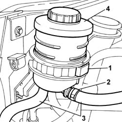

4130B10 POWER STEERING FLUID RESEVOIR R R
- Path
- Procedures > 41 STEERING UNIT > 4130 POWER STEERING > 4130B POWER STEERING HYDRAULIC SYTEM > 4130B10 POWER STEERING FLUID RESEVOIR R R
- Kind
- repair procedure (removal / refitting; the operation number is the code)
- Applies to
- all engines; all production periods
- Interactive page
- https://sloeber94.github.io/elrnDB-fUlss/en/#/179007358
Applies to: all engines; all production periods
 Removing
Removing
 Refitting
RefittingOp. 0010T70 POWER ASSISTED STEERING FLUID - REPLACE
1. Remove the rear clip securing the power steering reservoir bracket.
- Partly remove the reservoir.
2. Remove the retaining bands.
3. Disconnect the pipes.
- Collect the coolant in a suitable container.
4. Remove the power steering fluid reservoir.

Applies to: all engines; all production periods
Refitting
Removing- Connect the pipes to the power steering fluid reservoir and secure using bands.
- Position the reservoir within the bracket.
- Position the rear clip securing the power steering reservoir bracket and check the tightness.
Topics linked from this page (1)
Topics that link to this page (15)
- 1004B14 POWER UNIT WITH AUTOMATIC TRANSMISSION R + R
- 1008C14 ENGINE LINK BRACKET - R R
- 1020D14 FRONT CRANKSHAFT OIL SEAL COVER - R.R AND REPLACE SEALS FOR VERSIONS WITH OIL PUMP ON CRANKSHAFT, TIMING SIDE
- 1020D18 FRONT CRANK SHAFT COVER OIL SEAL - REPLACE
- 1032B46 TOOTHED DRIVE PULLEY - R + R
- 1032C18 MOBILE TIMING SYSTEM TENSIONER - R + R FOR 24 VALVE ENGINES
- 1032C31 FIXED TIMING TENSIONER - R R
- 1032D12 TIMING SYSTEM PROTECTIVE COVER(S) - R + R
- 1036C39 TIMING VARIATOR ON CYLINDER HEAD INTAKE CAMSHAFT - R R
- 1088C10 WATER PUMP - R + R
- 2130A10 AUTOMATIC TRANSMISSION - R + R
- 2130B12 AUTOMATIC TRANSMISSION TORQUE CONVERTER - R+R
- 4130B20 POWER STEERING PUMP - R.R.
- 4130B27 POWER ASSISTED STEERING PUMP AND ALTERNATOR MOUNTING - R.R.
- 5530A10 ALTERNATOR - R+R